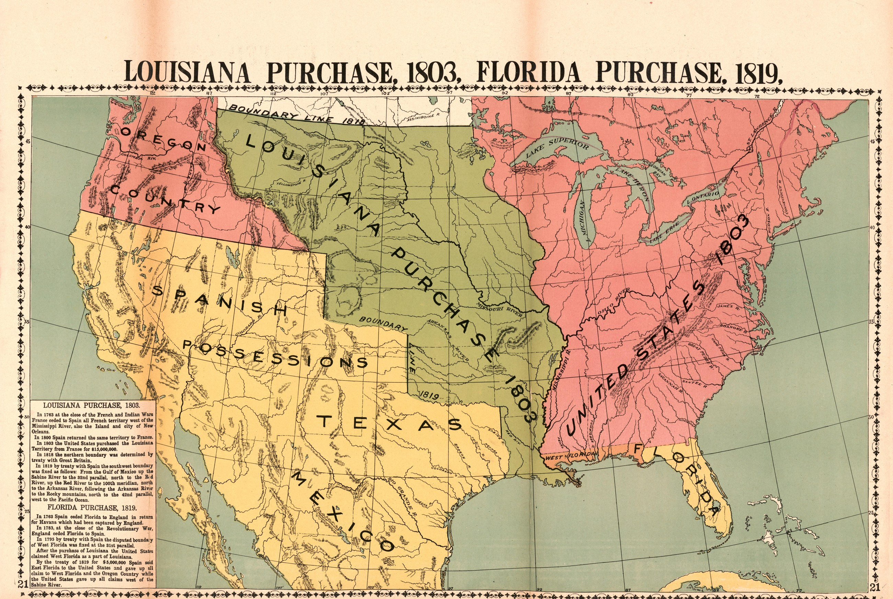

AYITI

MAP, 1919 · LIBRARY OF CONGRESS
×2
NOT IN YOUR TEXTBOOK
REC 00:00:00:00
HIDDEN HISTORY
KOLONI

NAPOLEON · J.-L. DAVID
SAINT-DOMINGUE = HAITI
SUGAR · COFFEE
RICHEST COLONY
LIBÈTE
TOUSSAINT LOUVERTURE
THE ENSLAVED RISE UP
20,000+SOLDIERS
LAGÈ

BATTLE IN SAINT-DOMINGUE · J. SUCHODOLSKI, 1845
DISASTER
YELLOW FEVER
GEN. LECLERC † 1802
1803
MAP, 1919 · LIBRARY OF CONGRESS
LOUISIANA
FOR SALE
SOLD
$15,000,000
LESS THAN 3¢ AN ACRE
×2
15 STATES
1804

JEAN-JACQUES DESSALINES
JAN 11804
FIRST FREE BLACK REPUBLIC
1862
NOT RECOGNIZED
1862 · LINCOLN FINALLY SAYS YES
0YEARS
AYITI
THANK YOU, HAITI
1802Napoleon's army1803Louisiana sold1804Haiti free1862Finally recognized
My history class skipped:
Answer here
HIDDEN HISTORY · HAITI × USA